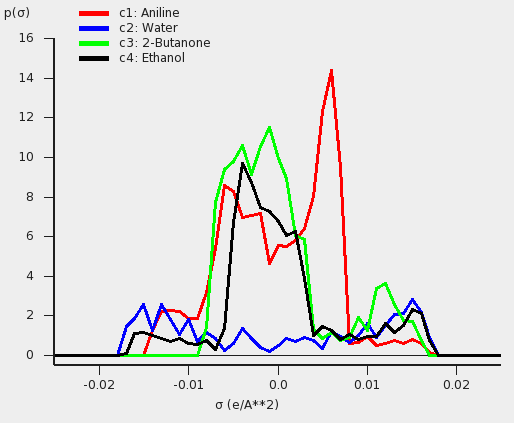

The COSMO-RS compound database¶
ADF has a database of COSMO result files, the COSMO-RS compound database ADFCRS-2018.
Install and use the COSMO-RS compound database¶
Step 1: Install database¶
For this tutorial we assume that you know how start AMScrs. If the ADFCRS-2018 database is not found you will get a dialog offering to install it via the AMSpackages module.
You can also uninstall or manually install using the Packages command:
- SCM → Packages
The database will be installed by AMSpackages in a standard location. The downloading and reading of some information about all compounds may take some time. More information this database can be found in the COSMO-RS Manual.
For more details, you can also look at the package manager documentation
If you wish to use a custom install location, you can set the SCM_ADFCRSDIR environment variable, which should point to the directory in which the database (with name ADFCRS-2018) is installed.
You can download a copy here, which you can extract to the custom install location.
Be sure not to duplicate the path ADFCRS-2018 folder name, as it is already present inside the zip file.
More information about the database can be found in the COSMO-RS Manual.
Below is a video, demonstrating how to perform the manual installation on a Windows machine.
You will need an internet connection to see the video.
Step 2: Add or search compounds¶
There are several ways to select a compound from the database and add it too the List of Added Compounds. The easiest way is to use the search button. A separate search window will popup if one clicks the search button. In the List of Added Compounds this search button looks like:
{kind=link}
In other windows it can look like:  (to select 1 compound) or (to add multiple compounds).
(to select 1 compound) or (to add multiple compounds).
- Select Compounds → List of Added CompoundsClick on the search button
- Click on ‘CAS’ to sort by CAS registry numberClick again to reverse the orderClick on ‘Nr’ to sort by numberClick on ‘dNr’ to sort by database numberClick on ‘Name’ to sort by nameClick on ‘Formula’ to sort by formulaEnter ‘pentanol’ in the ‘Search’ fieldClick on ‘Cyclopentanol’Click ‘OK’
Now Cyclopentanol is added to the List of Added Compounds. If the search button is used again Cyclopentanol will have number 1.

In the COSMO-RS database there is a file called ‘all.compoundlist’, which is a plain text file, in which on each line a filename of a ADF COSMO result file is given. One could make a different .compoundlist file which contains a only a selection of the compounds. This can be handy if one wants to add compounds to the List of Added Compounds.
The compounds could also have been added by adding multiple .coskf files, by selecting ‘COSMO kf file (*.coskf)’ for the popup menu ‘Files of type’ (or ‘Filter’), and selecting all .coskf files. On Windows it may, however, fail to add more than a few hundred .coskf files at a time in this way. If that fails, one should use the .compoundlist file.
Step 3: Set pure compound data¶
For the compounds in this database the number of ring atoms (Nring) is provided, which is needed in the COSMO-RS model [1] in order to calculate a ring correction term.
After selecting Compounds → List of Added Compounds and selecting a compound it is also possible to add some pure compound input data. Experimental pure compound data could be found, for example, at Refs. [2] [3] [4]. One could also use estimated pure compound data. There is an Estimate button in the right window for each of the pure compound properties that can be estimated using a QSPR (Quantitative Structure-Property Relationship) method. If one wants to save the pure compound input data in a .coskf file Press ‘Save As’ at the top of the right window.
References
| [1] | A. Klamt, V. Jonas, T. Bürger and J.C. Lohrenz, Refinement and Parametrization of COSMO-RS. J. Phys. Chem. A 102, 5074 (1998) |
| [2] | Wikipedia |
| [3] | NIST Chemistry WebBook |
| [4] | CHERIC. Korea Thermophysical Properties Data Bank: Pure Component Properties |
Step 4: Visualize the COSMO surface: AMSview¶
You can use AMSview to have a look at the COSMO surface, and the COSMO surface charge density. Here we use the selected cyclopentanol of the previous step.
- Select Compounds → List of Added CompoundsClick on the left side ‘Cyclopentanol’Press on the right side ‘Show 3D’Select the AMSview window ‘Cyclopentanol’Select AMSview → Add → COSMO: Surface Charge Density → on COSMO surface (reconstructed)Select AMSview → Add → COSMO: Surface Charge Density → on COSMO surface pointsSelect AMSview → View → Background → WhiteIncrease the size of the AMSview window, such that control lines at the bottom of the AMSview window are visibleIn the control line click on the ‘Cosmo surface’ pull-down menu and use the Show Details commandSelect in the lowest line Colormap → RainbowIn the control line click on the ‘Cosmo surface’ pull-down menu and use the Hide Details commandDo the same for the ‘Cosmo surface points’
{kind=link}
Next we will close this AMSview window:
- Select the AMSview window ‘Cyclopentanol’Select AMSview → File → CloseSelect the COSMO-RS GUI window
Octanol-Water partition coefficients (log POW )¶
In this example the Octanol-Water partition coefficients for 7 different compounds are calculated and compared to experiment.
In case of partly miscible liquids, like the Octanol-rich phase of Octanol and Water, both components have nonzero mole fractions. Next an input value is used for the volume quotient of the two solvents. The values for the nonzero mole fractions in the Octanol-rich phase and the molar volume quotient of the two solvents were taken from Ref. [421]. If one does not include such value, the program will use the COSMO volumes to calculate the volume quotient. The COSMO volumes can be found by selecting a compound in the List of Added Compounds.
- Select Properties → Partition Coefficients (LogP)Select ‘Preset Octanol-Water’ in the popup menu next to SolventEnter ‘298.15’ for the ‘Temperature’ in ‘Kelvin’Check the ‘+’ button to add ‘Acetamide’, ‘Methanol’, ‘Formic acid’, ‘Diethyl ether’ (Ethoxyethane), p-Dichlorobenzene (1,4-dichlorobenzene), ‘Hexamethylbenzene’, and ‘2,2’,4,4’,5-Pentachlorobiphenyl’File → Save AsEnter the name ‘tutorial4’ in the ‘Filename’ fieldPress ‘Run’
{kind=link}
The result of the calculation (may take a few seconds) is given in the form of a table. Note that not all compounds were selected as solutes, otherwise the calculation would take much more time.
{kind=link}
In the database the name ‘Ethoxyethane’ is used for ‘Diethyl ether’, and the name ‘1,4-Dichlorobenzene’ is used for ‘p-Dichlorobenzene’. In the search window that pops up if the search button is clicked, some alternative names are given for some of the compounds.
Next the calculated Octanol-Water partition coefficients are compared to experiment in the following table.
| Solute | experimental | calculated | |
| \(log P_{OW}\) [422] | \(log P_{OW}\) | ||
| 1 | Acetamide | -1.16 | -1.20 |
| 2 | Methanol | -0.82 | -0.53 |
| 3 | Formic acid | -0.41 | -0.26 |
| 4 | Diethyl ether | 0.83 | 1.82 |
| 5 | p-Dichlorobenzene | 3.37 | 3.20 |
| 6 | Hexamethylbenzene | 4.61 | 4.96 |
| 7 | 2,2’,4,4’,5-Pentachlorobiphenyl | 6.41 | 6.47 |
References
- S.-T. Lin and S.I. Sandler, Prediction of Octanol-Water Partition Coefficients Using a Group Contribution Solvation Model, Industrial & Engineering Chemistry research 38 (1999), 4081
- Experimental numbers taken from Wikipedia at July 15, 2010, http://en.wikipedia.org/wiki/Partition_coefficient. The experimental numbers may have been determined at a different temperature than 25 °C.
Henry’s law constants¶
In this example Henry’s law constants for 17 different compounds are calculated and compared to experiment.
The Henry’s law constants depend on the density of the solvent, Water in this case. If one does not supply a density of the solvent in the input the program calculates the density of the solvent by dividing the mass of a molecule with its COSMO volume. The density of Water at 20 °C (293.15 K) is approximately 0.998 kg/L. Note that the calculated activity coefficients do not depend on the density of Water.
Remark: To only add the compounds needed in this example, one can also open a new COSMO-RS GUI window (SCM → COSMO-RS), Select Compounds → Select Compound(s) from COSMO-RS database, and select tutorial4.3.compoundlist. This is recommended. Then the added compounds are at the top of the list if one uses the ‘+’ button, or search button. The tutorial4.3.compoundlist is a file with a list of compounds that is limited to the compounds needed in this example.
- Select Properties → Activity coefficientsSelect ‘Water’ for the first component in SolventEnter ‘293.15’ for the ‘Temperature’ in ‘Kelvin’Click the check box ‘Use input density solvent (kg/L)’Enter ‘0.998’ in the ‘Use input density solvent (kg/L)’ fieldCheck the ‘+’ button to add ‘Acetaldehyde’, ‘Acetone’, ‘Acetonitrile’, ‘Benzene’, ‘Chloromethane’, ‘Cyclopentane’, ‘Dimethyl sulfide’, ‘Ethanol’, ‘Formaldehyde’, ‘Methanol’, ‘Methyl acetate’, ‘Methyl bromide’, ‘Methyl fluoride’, ‘Methyl iodide’, ‘Pyridine’, ‘Thiophene’, and ‘Toluene’Press ‘Run’
{kind=link}
The result of the calculation (may take a few seconds, depending on the number of compounds selected) is given in the form of a table.
The calculated Henry’s law constants also depend on the vapor pressure of the pure compounds. In the compounds window one can also set these vapor pressures of the pure compounds at a given temperature, or set the Antoine parameters. If these values are not specified (if they are zero) then the pure compound vapor pressure will be approximated using the COSMO-RS method. Best is to include the experimental vapor pressure for a pure compound at the used temperature, thus in this case at 293.15 K.
To include all experimental numbers is rather tedious, thus one could skip the following part, and only look at the results below.
- Select Compounds → List of Added CompoundsClick on the left side ‘Acetaldehyde’Enter ‘0.968’ in the ‘Pure compound vapor pressure:’ fieldEnter ‘293.15’ in the ‘at temperature:’ fieldClick on the left side ‘Acetone’Enter ‘0.246’ in the ‘Pure compound vapor pressure:’ fieldEnter ‘293.15’ in the ‘at temperature:’ fieldClick on the left side ‘Acetonitrile’Enter ‘0.095’ in the ‘Pure compound vapor pressure:’ fieldEnter ‘293.15’ in the ‘at temperature:’ fieldClick on the left side ‘Benzene’Enter ‘0.100’ in the ‘Pure compound vapor pressure:’ fieldEnter ‘293.15’ in the ‘at temperature:’ fieldClick on the left side ‘Chloromethane’Enter ‘4.94’ in the ‘Pure compound vapor pressure:’ fieldEnter ‘293.15’ in the ‘at temperature:’ fieldClick on the left side ‘Cyclopentane’Enter ‘0.346’ in the ‘Pure compound vapor pressure:’ fieldEnter ‘293.15’ in the ‘at temperature:’ fieldClick on the left side ‘Dimethyl sulfide’Enter ‘0.530’ in the ‘Pure compound vapor pressure:’ fieldEnter ‘293.15’ in the ‘at temperature:’ fieldClick on the left side ‘Ethanol’Enter ‘0.059’ in the ‘Pure compound vapor pressure:’ fieldEnter ‘293.15’ in the ‘at temperature:’ fieldClick on the left side ‘Formaldehyde’Enter ‘4.47’ in the ‘Pure compound vapor pressure:’ fieldEnter ‘293.15’ in the ‘at temperature:’ fieldClick on the left side ‘Methanol’Enter ‘0.129’ in the ‘Pure compound vapor pressure:’ fieldEnter ‘293.15’ in the ‘at temperature:’ fieldClick on the left side ‘Methyl acetate’Enter ‘0.230’ in the ‘Pure compound vapor pressure:’ fieldEnter ‘293.15’ in the ‘at temperature:’ fieldClick on the left side ‘Methyl bromide’Enter ‘1.83’ in the ‘Pure compound vapor pressure:’ fieldEnter ‘293.15’ in the ‘at temperature:’ fieldClick on the left side ‘Methyl fluoride’Enter ‘33.7’ in the ‘Pure compound vapor pressure:’ fieldEnter ‘293.15’ in the ‘at temperature:’ fieldClick on the left side ‘Methyl iodide’Enter ‘0.443’ in the ‘Pure compound vapor pressure:’ fieldEnter ‘293.15’ in the ‘at temperature:’ fieldClick on the left side ‘Pyridine’Enter ‘0.021’ in the ‘Pure compound vapor pressure:’ fieldEnter ‘293.15’ in the ‘at temperature:’ fieldClick on the left side ‘Thiophene’Enter ‘0.082’ in the ‘Pure compound vapor pressure:’ fieldEnter ‘293.15’ in the ‘at temperature:’ fieldClick on the left side ‘Toluene’Enter ‘0.029’ in the ‘Pure compound vapor pressure:’ fieldEnter ‘293.15’ in the ‘at temperature:’ fieldClick on the left side ‘Water’Enter ‘0.02536’ in the ‘Pure compound vapor pressure:’ fieldEnter ‘293.15’ in the ‘at temperature:’ fieldSelect Properties → Activity coefficientsPress ‘Run’
For some of the compounds the Henry’s law constants differ quite substantially.
Experimental determined Henry’s law constants might, for example, be found at http://www.henrys-law.org, where a ‘compilation of Henry’s Law constants for inorganic and organic species of potential importance in environmental chemistry’ were listed by R.Sander, and where also an explanation can be found of the many different definitions and units for Henry’s law constants.
The calculated Henry’s law constants will be compared to experimental values in the next graph and table. The experimental numbers were taken from Ref. [431], where the experimentally determined dimensionless Henry’s law constant Hcc is the inverse of the dimensionless Henry’s law constant kH cc , that is used in the COSMO-RS module.
Hcc = kH, inv cc = 1/(kH cc )
| Solute | experimental | calculated | |
| Hcc @20°C [431] | Hcc @20° | ||
| 1 | Methyl_bromide | 2.01 10-1 | 2.05 10-1 |
| 2 | Chloromethane | 3.05 10-1 | 3.80 10-1 |
| 3 | Methyl_fluoride | 6.04 10-1 | 9.86 10-1 |
| 4 | Methyl_iodide | 1.70 10-1 | 1.04 10-1 |
| 5 | Cyclopentane | 5.25 100 | 3.27 100 |
| 6 | Benzene | 1.91 10-1 | 1.65 10-1 |
| 7 | Toluene | 2.09 10-1 | 1.89 10-1 |
| 8 | Methanol | 1.37 10-4 | 2.43 10-4 |
| 9 | Ethanol | 1.48 10-4 | 3.70 10-4 |
| 10 | Formaldehyde | 8.61 10-6 | 2.22 10-2 |
| 11 | Acetaldehyde | 2.21 10-3 | 3.72 10-3 |
| 12 | Acetrone | 1.10 10-3 | 0.78 10-3 |
| 13 | Methyl_acetate | 4.02 10-3 | 4.89 10-3 |
| 14 | Acetonitrile | 6.35 10-4 | 6.35 10-4 |
| 15 | Pyridine | 1.14 10-2 | 2.03 10-4 |
| 16 | Dimethyl_sulfide | 6.35 10-2 | 1.82 10-1 |
| 17 | Thiophene | 7.46 10-2 | 6.23 10-2 |
In most cases the calculated Henry’s law constants are quite close to the experimental ones, except for Formaldehyde and Pyridine.
The Henry’s law constant of Formaldehyde is more than a factor of 103 wrong. The origin of this error is that in Water solution the hydration of Formaldehyde leads to Methanediol, and Methanediol is even the dominant form if one dissolves Formaldehyde in Water. This is not taken into account in the calculation. In Ref. [432] a distinction is made between the apparent and intrinsic Henry’s law constants, which differ from each other by approximately a factor of 103 for Formaldehyde, and a factor of approximately 2.4 for Acetaldehyde. In Ref. [432] the intrinsic Henry’s law constant for Formaldehyde was determined to be 2.5 mol/(L atm) at 25 °C, which is close to the value of 1.9 mol/(L atm) which was calculated with COSMO-RS, although at a different temperature of 20 °C.
The calculated Henry’s law constant of Pyridine is approximately a factor of 102 different than the experimental value in Ref. [431]. However, the experimental values for Pyridine taken from Ref.[433] are 1.1 102 mol/(L atm) and 9.0 101 mol/(L atm), which are not very different from the calculated value with COSMO-RS of 2.1 102 mol/(L atm). Also the experimental values for Pyridine reported in Ref. [434] are in much better agreement with the value calculated with COSMO-RS.
References
- J. Staudinger and P.V. Roberts, A critical compilation of Henry’s law constant temperature dependence relations for organic compounds in dilute aqueous solutions, Chemosphere 44 (2001), 561
- E.A. Betterton and M.R. Hoffmann, Henry’s law constants of some environmentally important aldehydes, Environmental Science & Technology 22 (1988), 1415
- R. Sander (1999), Compilation of Henry’s Law Constants for Inorganic and Organic Species of Potential Importance in Environmental Chemistry (Version 3), http://www.henrys-law.org
- M. Bernauera and V. Dohnal, Temperature dependences of limiting activity coefficients and Henry’s law constants for N-methylpyrrolidone, pyridine, and piperidine in water, Fluid Phase Equilibria 282 (2009), 100
Solubility of Vanillin in organic solvents¶
In this example the solubility of Vanillin in 9 different solvents is calculated and compared to experiment.
Vanillin (4-Hydroxy-3-methoxybenzaldehyde) is a solid at room temperature. For the solubility of a solid, one should include the melting point and the enthalpy of fusion of the solid in the right window of the List of Added Compounds for a selected compound. If known the Δ heat capacity of fusion should also be included, although it is often less important.
Remark: To only add the compounds needed in this example, one can also open a new COSMO-RS GUI window (SCM → COSMO-RS), Select Compounds → Select Compound(s) from COSMO-RS database, and select tutorial4.4.compoundlist. Then the added compounds are at the top of the list if one uses the ‘+’ button, or search button. The tutorial4.4.compoundlist is a file with a list of compounds that is limited to the compounds needed in this example.
- Select Compounds → List of Added CompoundsClick on the ‘Search or add compound to the list of compounds’. A search window will pop upEnter ‘Vanillin’ in the ‘Search’ fieldClick on ‘Vanillin’Click ‘OK’ (the search window will disappear)Click on the left side ‘Vanillin’Enter ‘355’ in the ‘Melting point:’ fieldEnter ‘5.35’ in the ‘Δ_fusion H:’ fieldSelect Properties → Solubility in Pure SolventsCheck the ‘+’ button to add pure compound solvents‘Water’, ‘1,2-Dichloroethane’‘1-Propanol’, ‘Oxolane’ (THF), ‘Acetonitrile’,‘2-Butanone’, ‘Ethanol’, ‘Methanol’, and ‘Toluene’Enter ‘298.15’ without quotes for the temperature in the ‘from:’ field in ‘Kelvin’Enter ‘298.15’ in the ‘to:’ field in ‘Kelvin’Select ‘Vanillin’ for the ‘Solute’Change the popup menu next to Solute from ‘Liquid’ to ‘Solid’Press ‘Run’
Note that for the calculation of the solubility in units of mol/L and g/L the program uses information of the mass and COSMO volume of the solvent and solute. Especially the COSMO volume may not always be accurate.
These results can be put in a table. Compared to experiment there can easily be a factor of 2 deviation.
| Solvent | experimental Solubility Vanillin | calculated Solubility Vanillin | |
| (mol/L) [441] | (mol/L solution) | ||
| 1 | 1,2-Dichloroethane | 1.175 | 2.65 |
| 2 | 1-Propanol | 1.820 | 3.12 |
| 3 | Oxolane | 3.594 | 4.73 |
| 4 | Acetonitrile | 2.360 | 3.31 |
| 5 | 2-Butanone | 2.138 | 4.10 |
| 6 | Ethanol | 2.470 | 3.55 |
| 7 | Methanol | 4.160 | 4.04 |
| 8 | Toluene | 0.302 | 0.99 |
| 9 | Water | 0.070 | 0.034 |
References
441. Experimentally determined solubilities of Vanillin in some organic solvents were taken at July 15, 2010. See the Open Notebook Science Challenge: Solubilities of Organic Compounds in Organic Solvents, Nature Precedings, https://doi.org/10.1038/npre.2010.4243.3.
Binary mixture of Methanol and Hexane¶
In this example a vapor-liquid diagram of Methanol and Hexane is calculated and compared to experiment.
First a binary mixture of Methanol and Hexane is calculated at a constant temperature of 333.15 Kelvin. Next this binary mixture is calculated at a constant pressure of of 1.01325 bar. Experimental pure compound properties are used.
- Select Compounds → List of Added CompoundsAdd ‘Methanol’ and ‘Hexane’ to this listClick on the left side ‘Methanol’Enter ‘0.845’ in the ‘Pure compound vapor pressure:’ fieldEnter ‘333.15’ in the ‘at temperature:’ fieldClick on the left side ‘Hexane’Enter ‘0.77’ in the ‘Pure compound vapor pressure:’ fieldEnter ‘333.15’ in the ‘at temperature:’ fieldSelect Properties → Binary Mixture VLE/LLESelect ‘Methanol’ for the first compoundSelect ‘Hexane’ for the second compoundEnter ‘100’ in the ‘Number of mixtures’ fieldSelect Isotherm, isobar, flash point → isothermEnter ‘333.15’ for the ‘Temperature’ in ‘Kelvin’Press ‘Run’Select Graph → X Axes → x1, y1Select Graph → Y Axes → total vapor pressure
In case of a miscibility gap there are two molar fractions x1 and x1’, for which both compounds have the same activities. In the calculation one can plot the activity a1 versus a2. If there is a closed loop, there is a miscibility gap:
- Select Graph → X Axes → a1: x1*gammaSelect Graph → Y Axes → activities
Thus there is a calculated miscibility gap. The properties of the two immiscible liquid phases are given in the table: the calculated miscibility gap is between approximately x1 = 0.272 and x1’ = 0.805, with a calculated total vapor pressure of approximately 1.48 bar. Within the miscibility gap, the liquid mixture consists of 2 immiscible liquid phases, one is Methanol-rich, the other Hexane-rich. Note, however, that within the miscibility gap the COSMO-RS calculation further incorrectly uses a forced 1 liquid-phase instead of 2 immiscible liquid phases. Also note that a pressure-maximum azeotrope is in the miscibility gap.
If the check box Graph → X Axes → force 1 liquid phase within possible miscibility gap is selected, then results will be shown also within the miscibility gap, with the unphysical conditions that the two liquids are forced to mix. If the check box Graph → X Axes → force 1 liquid phase within possible miscibility gap is deselected, then results will be shown in the graph and table only for those compositions of the mixture, which are outside of the miscibility gap.
{kind=link}
- Deselect the check boxGraph → X Axes → force 1 liquid phase within possible miscibility gapSelect Graph → X Axes → x1: molar fraction 1Select Graph → Y Axes → excess energies
- Select Compounds → List of Added CompoundsClick on the left side ‘Methanol’Enter ‘1.01325’ in the ‘Pure compound vapor pressure:’ fieldEnter ‘337.8’ in the ‘at temperature:’ fieldClick on the left side ‘Hexane’Enter ‘1.01325’ in the ‘Pure compound vapor pressure:’ fieldEnter ‘342’ in the ‘at temperature:’ fieldSelect Properties → Binary Mixture VLE/LLESelect ‘Methanol’ for the first compoundSelect ‘Hexane’ for the second compoundEnter ‘100’ in the ‘Number of mixtures’ fieldSelect Isotherm, isobar, flash point → isobarEnter ‘1.01325’ for the ‘Pressure’ in ‘bar’Press ‘Run’Select Graph → X Axes → x1, y1Select Graph → Y Axes → temperatureSelect the check boxGraph → X Axes → force 1 liquid phase within possible miscibility gap
There is a calculated miscibility gap between approximately x1 = 0.219 and x1’ = 0.831, with a calculated temperature of approximately 323.3 Kelvin (50.1 °C). Within the miscibility gap, the liquid mixture consists of 2 immiscible liquid phases, one is Methanol-rich, the other Hexane-rich. Note that if the check box ‘force 1 liquid phase within possible miscibility gap’ is selected, within the miscibility gap the COSMO-RS calculation further incorrectly uses a forced 1 liquid-phase instead of 2 immiscible liquid phases. Also note that a temperature-minimum azeotrope is in the miscibility gap.
Experimental results for the Methanol-Hexane mixture were taken from Ref. [451]. These are compared with the calculated ones in the next graph. More experimental VLE data might also be found at Ref. [452].
References
- Wikipedia Hexane data page: http://en.wikipedia.org/wiki/Hexane_(data_page)
Large infinite dilution activity coefficients in Water¶
In this example infinite dilution activity coefficients of 31 organic compounds in Water are calculated and compared to experiment.
Remark: To only add the compounds needed in this example, one can also open a new COSMO-RS GUI window (SCM → COSMO-RS), Select Compounds → Select Compound(s) from COSMO-RS database, and select tutorial4.6.compoundlist. This is recommended. Then the added compounds are at the top of the list if one uses the ‘+’ button, or search button. The tutorial4.6.compoundlist is a file with a list of compounds that is limited to the compounds needed in this example.
- Select Properties → Activity coefficientsSelect ‘Water’ for the first component in SolventEnter ‘298.15’ for the ‘Temperature’ in ‘Kelvin’Check the ‘+’ button to add infinite dilute solutes: ‘1,1,1-Trichloroethane’, ‘1,2-Dichloroethane’, ‘1-Bromobutane’, ‘1-Bromopropane’, ‘1-Chlorobutane’, ‘1-Chlorohexane’, ‘1-Chloropentane’, ‘1-Chloropropane’, ‘1-Propoxypropane’, ‘2-Bromobutane’, ‘2-Bromopropane’, ‘2-Chloropropane’, ‘Benzene’, ‘Bromoethane’, ‘Chloroform’, ‘Cumene’, ‘Dichloromethane’, ‘Diisopropyl_ether’, ‘Di-n-butyl_ether’, ‘Ethylbenzene’, ‘Ethyl_iodide’, ‘Mesitylene’, ‘m-Xylene’, ‘n-Butylbenzene’, ‘n-Propylbenzene’, ‘n-Propyl_iodide’, ‘o-Xylene’, ‘p-Xylene’, ‘Tetrachloroethene’, ‘Toluene’, and ‘Trichloroethene’Press ‘Run’
{kind=link}
These results can be put in a graph and a table. Experimental results taken from Ref. [461].
here’s the table
| Solute | experimental | calculated | |
| \(\gamma_2^\infty\) [461] | \(\gamma_2^\infty\) | ||
| 1 | Dichloromethane | 253 | 278 |
| 2 | Diisopropyl_ether | 628 | 2343 |
| 3 | 1,2-Dichloroethane | 641 | 976 |
| 4 | Bromoethane | 679 | 601 |
| 5 | Chloroform | 903 | 1474 |
| 6 | 2-Chloropropane | 1.48 103 | 1.42 103 |
| 7 | 1-Chloropropane | 1.75 103 | 1.73 103 |
| 8 | 2-Bromopropane | 2.09 103 | 1.77 103 |
| 9 | Ethyl_iodide | 2.19 103 | 1.19 103 |
| 10 | 1-Propoxypropane | 2.31 103 | 4.89 103 |
| 11 | Benzene | 2.48 103 | 2.07 103 |
| 12 | 1-Bromopropane | 2.86 103 | 2.36 103 |
| 13 | 1,1,1-Trichloroethane | 5.90 103 | 5.77 103 |
| 14 | 1-Chlorobutane | 7.61 103 | 7.25 103 |
| 15 | 2-Bromobutane | 8.32 103 | 7.81 103 |
| 16 | n-Propyl_iodide | 8.55 103 | 5.16 103 |
| 17 | Trichloroethene | 8.75 103 | 6.45 103 |
| 18 | Toluene | 9.19 103 | 8.13 103 |
| 19 | 1-Bromobutane | 1.22 104 | 0.93 104 |
| 20 | o-Xylene | 3.05 104 | 2.37 104 |
| 21 | 1-Chloropentane | 3.21 104 | 3.13 104 |
| 22 | Ethylbenzene | 3.27 104 | 2.99 104 |
| 23 | m-Xylene | 3.32 104 | 3.56 104 |
| 24 | p-Xylene | 3.33 104 | 3.30 104 |
| 25 | Tetrachloroethene | 3.60 104 | 3.81 104 |
| 26 | Di-n-butyl_ether | 4.72 104 | 8.96 104 |
| 27 | Cumene | 1.02 105 | 0.83 105 |
| 28 | Mesitylene | 1.17 105 | 1.49 105 |
| 29 | n-Propylbenzene | 1.36 105 | 1.24 105 |
| 30 | 1-Chlorohexane | 1.41 105 | 1.46 105 |
| 31 | n-Butylbenzene | 5.66 105 | 5.16 105 |
References
- J. Li, A.J. Dallas, D.I. Eikens, P.W. Carr, D.L. Bergmann, M.J. Hait, C.A. Eckert, Measurement of large infinite dilution activity coefficients of nonelectrolytes in water by inert gas stripping and gas chromatography, Analytical Chemistry 65 (1993), 3212
Parametrization of ADF COSMO-RS: solvation energies, vapor pressures, partition coefficients¶
In Ref. [471] the ADF COSMO-RS parameters were fitted to 642 experimental values of properties for the set of 217 compounds from the supplementary material of Klamt et al. [472]. These properties are the ΔG of hydration, the vapor pressure, and the partition coefficients for Octanol/Water, Hexane/Water, Benzene/Water, and Ethoxyethane/Water. In this example all these properties will be calculated for the set of 217 compounds, and the results will be compared to the experimental data collected by Klamt. et al. in Ref. [472].
Note that these calculations in this section may take a while, because of the many compounds calculated at once.
Open a new COSMO-RS GUI window (SCM → COSMO-RS). Select Compounds → Select Compound(s) from COSMO-RS database, and select tutorial4.7.compoundlist.
ΔG of hydration
- Select Properties → Activity coefficientsSelect ‘Water’ for the first component in SolventEnter ‘298.15’ for the ‘Temperature’ in ‘Kelvin’Click the check box ‘Use input density solvent (kg/L)’Enter ‘0.997’ in the ‘Use input density solvent (kg/L)’ fieldCheck the ‘+’ button to add infinite dilute solutes, the first 217 from the listPress ‘Run’
{kind=link}
The results for the free energy of hydration (Δ G (kcal/mol) gas → solute) can be compared with experimental values, see this table and next graph.
Vapor pressure
- Select Properties → Vapor Pressure Pure CompoundsEnter ‘298.15’ for ‘Temperature Kelvin’Check the ‘+’ button to add the first 217 from the listPress ‘Run’
{kind=link}
One should take the log10 of the calculated vapor pressure in bar. The results for the calculated vapor pressures can be compared with experimental values, see this table and next graph. Suggestion is to do this only for a few compounds.
Octanol-Water partition coefficients
- Select Properties → Partition Coefficients (LogP)Select ‘Preset Octanol-Water’ in the popup menu next to SolventEnter ‘298.15’ for the ‘Temperature’ in ‘Kelvin’Check the ‘+’ button to add the first 217 from the list to the list of infinite dilute solutesPress ‘Run’
The results for the Octanol-Water partition coefficients can be compared with experimental values, see this table and next graph.
Hexane-Water, Benzene-Water, and Ethoxyethane-Water partition coefficients
- Select Properties → Partition Coefficients (LogP)Select ‘Preset Hexane-Water’ in the popup menu next to SolventEnter ‘298.15’ for the ‘Temperature’ in ‘Kelvin’Check the ‘+’ button to add the first 217 from the list to the list of infinite dilute solutesPress ‘Run’
{kind=link}
- Select Properties → Partition Coefficients (LogP)Select ‘Preset Benzene-Water’ in the popup menu next to SolventEnter ‘298.15’ for the ‘Temperature’ in ‘Kelvin’Check the ‘+’ button to add the first 217 from the list to the list of infinite dilute solutesPress ‘Run’
{kind=link}
- Select Properties → Partition Coefficients (LogP)Select ‘Preset Ether-Water’ in the popup menu next to SolventEnter ‘298.15’ for the ‘Temperature’ in ‘Kelvin’Check the ‘+’ button to add the first 217 from the list to the list of infinite dilute solutesPress ‘Run’
{kind=link}
The results for the Hexane-Water, Benzene-Water, and Ethoxyethane-Water (Ether-Water) partition coefficients can be compared with experimental values, see this table and next graph.
Table: Parametrization of COSMO-RS¶
The ADF COSMO-RS parameters were fitted to 642 experimental values of properties for the set of 217 compounds from the supplementary material of Klamt et al. [472]. These properties are the ΔG of hydration, the vapor pressure (log10 Pvap, Pvap in bar) and the log10 partition coefficients for Octanol/Water (log POW ), Hexane/Water (log PHW ), Benzene/Water (log PBW ), and Ethoxyethane/Water (log PEW ). The fit excluded the properties of Water.
The next tables show the results with the ADF COSMO-RS implementation and the compounds in the COSMO-RS compound database ADFCRS-2018. See the COSMO-RS GUI tutorial about the parametrization of ADF COSMO-RS, how to calculate these values with ADF COSMO-RS program.
| Solute | ΔGhydr | log POW | log Pvap | |||
|---|---|---|---|---|---|---|
| exp. | calc. | exp. | calc. | exp. | calc. | |
| Methane | 1.97 | 1.55 | 1.09 | 0.89 | 2.45 | |
| Ethane | 1.81 | 1.80 | 1.81 | 1.58 | 1.83 | |
| Propane | 1.97 | 1.96 | 2.28 | 2.14 | 0.98 | 1.30 |
| Butane | 2.12 | 2.10 | 2.89 | 2.73 | 0.39 | 0.74 |
| Isobutane | 2.31 | 2.03 | 2.76 | 2.65 | 0.54 | 0.78 |
| Pentane | 2.33 | 2.24 | 3.39 | 3.31 | -0.17 | 0.19 |
| 2-Methylbutane | 2.38 | 2.14 | 3.14 | -0.04 | 0.31 | |
| 2,2-Dimethylpropane | 2.58 | 2.04 | 3.11 | 3.00 | 0.23 | 0.39 |
| Hexane | 2.53 | 2.38 | 3.90 | 3.89 | -0.70 | -0.35 |
| Octane | 2.89 | 2.64 | 4.90 | 5.05 | -1.73 | -1.45 |
| Cyclopropane | 0.75 | 0.60 | 1.72 | 1.58 | 0.93 | |
| Cyclopentane | 1.20 | 1.09 | 3.00 | 2.85 | -0.34 | -0.13 |
| Methylcyclopentane | 1.60 | 1.19 | 3.37 | 3.33 | -0.74 | -0.61 |
| Cyclohexane | 1.23 | 1.05 | 3.44 | 3.29 | -0.84 | -0.67 |
| Cyclooctane | 0.85 | 0.81 | 4.45 | 4.10 | -1.75 | |
| Ethene | 1.27 | 1.01 | 1.13 | 1.04 | 1.82 | |
| Propene | 1.27 | 1.11 | 1.77 | 1.63 | 1.06 | 1.24 |
| 1-Butene | 1.38 | 1.29 | 2.40 | 2.23 | 0.48 | 0.70 |
| Isobutene | 1.22 | 1.15 | 2.34 | 2.10 | 0.48 | 0.74 |
| cis-2-Butene | 1.27 | 2.31 | 2.20 | 0.33 | 0.72 | |
| 1-Pentene | 1.66 | 1.44 | 2.82 | -0.07 | 0.16 | |
| 2-Methyl-2-butene | 1.31 | 1.42 | 2.72 | -0.21 | 0.26 | |
| 1-Hexene | 1.68 | 1.55 | 3.39 | 3.35 | -0.61 | -0.35 |
| 1-Octene | 2.17 | 1.83 | 4.57 | 4.52 | -1.63 | -1.44 |
| Cyclopentene | 0.56 | 0.45 | 2.39 | -0.29 | -0.08 | |
| Cyclohexene | 0.37 | 0.32 | 2.86 | 2.85 | -0.93 | -0.70 |
| 1-Methylcyclohexene | 0.67 | 0.48 | 3.42 | -1.41 | -1.22 | |
| 1,2-Propadiene | 0.57 | 1.45 | 1.27 | 0.77 | 1.19 | |
| 1,3-Butadiene | 0.59 | 0.68 | 1.99 | 1.84 | 0.45 | 0.64 |
| Isoprene | 0.68 | 0.80 | 2.33 | -0.13 | 0.20 | |
| 1,4-Pentadiene | 0.94 | 0.85 | 2.48 | 2.38 | 0.01 | 0.17 |
| Acetylene | -0.01 | -0.63 | 0.37 | 0.37 | 1.18 | |
| Propyne | -0.31 | -0.51 | 0.94 | 0.92 | 0.76 | 0.59 |
| 1-Butyne | -0.16 | -0.24 | 1.45 | 1.58 | 0.28 | 0.16 |
| 2-Butyne | -0.13 | 1.46 | 1.66 | -0.03 | 0.17 | |
| 1-Pentyne | 0.01 | -0.07 | 1.98 | 2.17 | -0.24 | -0.33 |
| 1-Hexyne | 0.29 | 0.06 | 2.73 | 2.74 | -0.77 | -0.85 |
| 1-Octyne | 0.71 | 0.34 | 3.91 | -1.77 | -1.89 | |
| 1-Buten-3-yne | 0.04 | -0.27 | 1.43 | 0.32 | 0.33 | |
| Methanol | -5.09 | -4.87 | -0.77 | -0.53 | -0.78 | -0.85 |
| Ethanol | -4.96 | -4.70 | -0.31 | 0.09 | -1.10 | -1.24 |
| 1-Propanol | -4.84 | -4.53 | 0.25 | 0.62 | -1.54 | -1.61 |
| 2-Propanol | -4.76 | -4.50 | 0.05 | 0.59 | -1.20 | -1.54 |
| 1-Butanol | -4.72 | -4.52 | 0.88 | 1.20 | -1.85 | -2.17 |
| 2-Butanol | -4.59 | -3.85 | 0.61 | 1.32 | -1.61 | -1.83 |
| 2-Methyl-1-propanol | -4.52 | -3.94 | 0.76 | 1.28 | -1.78 | -1.86 |
| 2-Methyl-2-propanol | -4.51 | -4.37 | 0.35 | 1.00 | -1.44 | -1.82 |
| 1-Pentanol | -4.48 | -4.32 | 1.56 | 1.82 | -2.60 | -2.65 |
| 1-Heptanol | -4.24 | -4.05 | 2.72 | 2.96 | -3.62 | -3.63 |
| 1-Octanol | -4.10 | -3.92 | 2.97 | 3.55 | -4.05 | -4.15 |
| 2-Propen-1-ol | -5.03 | -4.31 | 0.17 | 0.41 | -1.43 | -1.34 |
| 2-Propyn-1-ol | -5.10 | -0.38 | 0.14 | -1.68 | -1.78 | |
| Cyclohexanol | -5.47 | -5.52 | 1.23 | 1.67 | -3.12 | -3.32 |
| Methoxymethane | -1.89 | -1.48 | 0.10 | 0.47 | 0.77 | 0.90 |
| Ethoxyethane | -1.69 | -1.24 | 0.89 | 1.82 | -0.14 | -0.24 |
| 1-Propoxypropane | -1.15 | -0.93 | 2.03 | 2.95 | -1.08 | -1.24 |
| 2-Methoxypropane | -1.66 | -1.48 | 1.21 | 1.58 | -0.22 | -0.15 |
| 2-Methoxy-2-methylpropane | -2.21 | -1.53 | 0.94 | 1.95 | -0.47 | -0.54 |
| Dimethoxymethane | -2.93 | -3.22 | 0.18 | 0.55 | -0.27 | -0.64 |
| 1,2-Dimethoxyethane | -4.83 | -3.07 | -0.21 | 1.10 | -1.00 | -0.94 |
| Oxirane | -2.57 | -0.30 | 0.02 | 0.24 | 0.23 | |
| 2-Methyloxirane | -2.78 | 0.03 | 0.49 | -0.14 | -0.27 | |
| 2-Ethyloxirane | -2.91 | -2.64 | 1.05 | -0.50 | -0.73 | |
| Oxolane | -3.47 | -3.36 | 0.46 | 0.97 | -0.67 | -0.67 |
| Tetrahydro-2H-pyran | -3.12 | -2.93 | 0.95 | 1.51 | -1.02 | -1.06 |
| 1,3-Dioxolane | -4.10 | -4.21 | -0.37 | 0.03 | -0.86 | -0.92 |
| 1,4-Dioxane | -5.05 | -5.40 | -0.42 | 0.14 | -1.30 | -1.61 |
| Formaldehyde | -2.07 | -0.48 | 0.71 | 0.79 | ||
| Acetaldehyde | -3.50 | -3.29 | -0.04 | -0.31 | 0.08 | -0.01 |
| Propanal | -3.44 | -2.98 | 0.59 | 0.31 | -0.37 | -0.30 |
| Butanal | -3.18 | -2.85 | 0.88 | 0.85 | -0.83 | -0.74 |
| 2-Methylpropanal | -2.90 | -2.63 | 0.90 | -0.64 | -0.63 | |
| Hexanal | -2.81 | -2.59 | 1.78 | 2.01 | -1.83 | -1.74 |
| Octanal | -2.29 | -2.32 | 3.14 | -2.80 | -2.75 | |
| 2-Propenal | -3.10 | -3.53 | -0.01 | 0.00 | -0.44 | -0.57 |
| Acetone | -3.85 | -4.30 | -0.24 | -0.12 | -0.49 | -0.68 |
| 2-Butanone | -3.67 | -3.75 | 0.29 | 0.59 | -0.95 | -0.98 |
| 2-Pentanone | -3.53 | -3.62 | 0.91 | 1.14 | -1.33 | -1.42 |
| 3-Pentanone | -3.41 | -3.22 | 0.80 | 1.34 | -1.33 | -1.33 |
| 3-Methyl-2-butanone | -3.24 | -3.46 | 0.56 | 1.11 | -1.16 | -1.29 |
| 2-Heptanone | -3.04 | -3.37 | 1.98 | 2.30 | -2.30 | -2.44 |
| 2-Octanone | -2.88 | -3.26 | 2.37 | 2.87 | -2.77 | -2.96 |
| Cyclohexanone | -4.60 | -5.38 | 0.81 | 1.02 | -2.21 | -2.41 |
| 2,3-Butanedione | -3.52 | 0.44 | -1.11 | -1.30 | ||
| p-Benzoquinone | -6.12 | 0.20 | 0.27 | -3.16 | ||
| Acetic_acid | -6.70 | -6.20 | -0.17 | -0.02 | -1.67 | -2.08 |
| Propanoic_acid | -6.47 | -5.73 | 0.33 | 0.61 | -2.26 | -2.24 |
| Butanoic_acid | -6.35 | -5.59 | 0.79 | 1.16 | -2.98 | -2.67 |
| Methyl_formate | -2.78 | -2.73 | 0.00 | -0.11 | -0.19 | |
| Ethyl_formate | -2.65 | -2.75 | 0.23 | 0.57 | -0.49 | -0.65 |
| Methyl_acetate | -3.31 | -3.21 | 0.18 | 0.39 | -0.54 | -0.69 |
| Ethyl_acetate | -3.09 | -3.28 | 0.73 | 0.95 | -0.90 | -1.21 |
| Propyl_acetate | -2.86 | -3.10 | 1.24 | 1.56 | -1.36 | -1.69 |
| Ethyl_propanoate | -2.80 | -2.85 | 1.21 | 1.63 | -1.30 | -1.57 |
| Dimethyl_carbonate | -3.19 | 0.67 | -1.15 | -1.22 | ||
| Diethyl_carbonate | -3.29 | 1.21 | 1.75 | -1.84 | -2.23 | |
| Benzene | -0.87 | -0.83 | 2.13 | 2.12 | -0.90 | -0.79 |
| Toluene | -0.82 | -0.77 | 2.73 | 2.67 | -1.42 | -1.34 |
| o-Xylene | -0.90 | -0.79 | 3.12 | 3.09 | -2.05 | -1.82 |
| m-Xylene | -0.82 | -0.66 | 3.20 | 3.26 | -1.96 | -1.90 |
| p-Xylene | -0.81 | -0.64 | 3.15 | 3.23 | -1.93 | -1.85 |
| Ethylbenzene | -0.70 | -0.62 | 3.19 | -1.90 | -1.80 | |
| tert-Butylbenzene | -0.44 | -0.56 | 4.11 | 3.89 | -2.52 | -2.53 |
| Biphenyl | -2.64 | -2.81 | 4.01 | 3.86 | -4.21 | |
| Diphenylmethane | -2.81 | -2.86 | 4.14 | 4.30 | -4.75 | |
| Naphthalene | -2.40 | -2.17 | 3.30 | 3.19 | -2.97 | |
| Anthracene | -3.46 | -3.47 | 4.45 | 4.25 | -5.09 | |
| Styrene | -1.27 | -1.19 | 2.95 | 2.80 | -2.02 | -1.84 |
| Phenol | -6.57 | -5.82 | 1.46 | 1.72 | -2.86 | |
| 2-Methylphenol | -5.87 | -5.40 | 1.95 | 2.30 | -3.12 | |
| 4-Methylphenol | -6.13 | -5.67 | 1.94 | 2.21 | -3.39 | |
| 4-tert-Butylphenol | -5.92 | -5.45 | 3.31 | 3.43 | -4.51 | |
| Methoxybenzene | -2.55 | -2.27 | 2.11 | 2.32 | -2.32 | -2.17 |
| 1-Phenylethanone | -4.58 | -4.98 | 1.58 | 1.59 | -3.25 | -3.17 |
| Diphenylmethanone | -6.16 | 3.18 | 3.08 | -5.70 | ||
| Benzaldehyde | -4.02 | -4.51 | 1.48 | 1.27 | -3.00 | -2.61 |
| 3-Hydroxybenzaldehyde | -9.51 | -9.67 | 1.38 | 1.08 | -5.73 | |
| 4-Hydroxybenzaldehyde | -10.47 | -10.58 | 1.35 | 0.95 | -6.35 | |
| Benzoic_acid | -6.89 | 1.87 | 1.87 | -4.13 | ||
| Methyl_benzoate | -4.28 | -3.89 | 2.12 | 2.26 | -3.11 | -3.23 |
| Furan | -0.90 | -1.26 | 1.34 | 1.35 | -0.10 | -0.34 |
| Carbon_monoxide | 2.23 | 1.56 | 0.92 | 2.41 | ||
| Carbon_dioxide | 0.11 | 0.80 | 0.81 | 1.81 | 1.91 | |
| Hydrogen | 2.34 | 1.39 | 0.12 | 3.26 | ||
| Water | -6.29 | -8.32 | -1.38 | -1.57 | -1.50 | -2.97 |
| Hydrogen_peroxide | -8.48 | -1.18 | -0.57 | -2.58 | -2.28 | |
| Nitrogen | 2.45 | 2.32 | 0.67 | 0.88 | 3.02 | |
| Ammonia | -5.05 | -1.23 | 1.00 | 0.42 | ||
| Methanamine | -3.92 | -0.22 | 0.55 | 0.59 | ||
| N-Methylmethanamine | -2.51 | 0.70 | 0.31 | 0.60 | ||
| N,N-Dimethylmethanamine | -1.00 | 1.51 | 0.33 | 0.68 | ||
| Ethanamine | -3.90 | 0.30 | 0.14 | 0.17 | ||
| N-Ethylethanamine | -1.90 | 2.03 | -0.52 | -0.41 | ||
| N,N-Diethylethanamine | -0.34 | 3.35 | -1.11 | -0.96 | ||
| 1-Propanamine | -3.55 | 1.00 | -0.38 | -0.30 | ||
| 2-Propanamine | -3.43 | 1.00 | -0.11 | -0.27 | ||
| 1-Butanamine | -3.44 | 1.57 | -0.91 | -0.79 | ||
| 2-Methyl-2-propanamine | -3.47 | 1.36 | -0.32 | -0.60 | ||
| 1-Pentanamine | -3.29 | 2.16 | -1.40 | -1.29 | ||
| 1-Hexanamine | -3.38 | 2.63 | -1.93 | -1.79 | ||
| N-Propyl-1-propanamine | -1.80 | 3.12 | -1.49 | -1.40 | ||
| N-Butyl-1-butanamine | -1.54 | 4.28 | -2.47 | -2.45 | ||
| Aziridine | -4.63 | -0.13 | -0.50 | -0.35 | ||
| Pyrrolidine | -3.40 | 1.42 | -1.08 | -0.73 | ||
| Piperidine | -3.22 | 1.94 | -1.37 | -1.24 | ||
| 1-Methylpiperidine | -1.79 | 2.72 | -1.23 | |||
| Piperazine | -7.44 | 0.65 | -2.28 | |||
| 1,2-Ethanediamine | -8.66 | -0.66 | -1.79 | -1.93 | ||
| Formamide | -10.92 | -1.59 | -1.56 | -4.93 | ||
| Acetamide | -11.03 | -1.26 | -1.20 | -5.04 | ||
| N-Methylformamide | -8.80 | -0.97 | -0.94 | -3.15 | -3.39 | |
| N-Methylacetamide | -10.08 | -9.08 | -1.05 | -0.46 | -3.85 | -3.71 |
| N,N-Dimethylformamide | -6.91 | -1.01 | -0.48 | -2.36 | -1.69 | |
| N,N-Dimethylacetamide | -8.55 | -7.22 | -0.77 | 0.03 | -3.12 | -2.01 |
| Methyl_carbamate | -8.57 | -0.66 | -0.34 | -3.94 | ||
| Aniline | -5.68 | -5.15 | 0.51 | 1.40 | -3.05 | -2.89 |
| Phenylmethanamine | -4.42 | 1.92 | -3.02 | -2.68 | ||
| Pyrrole | -4.30 | -4.53 | 0.75 | 1.18 | -1.96 | -1.52 |
| 3-Methyl-1H-indole | -5.91 | -5.53 | 2.60 | 2.96 | -3.90 | |
| 1H-Imidazole | -11.39 | -0.08 | -0.45 | -6.00 | ||
| 4-Methyl-1H-imidazole | -10.24 | -10.76 | 0.23 | 0.22 | -5.99 | |
| Pyridine | -4.70 | -4.53 | 0.65 | 0.82 | -1.56 | -1.35 |
| o-Picoline | -4.63 | -4.30 | 1.11 | 1.48 | -1.82 | -1.75 |
| m-Picoline | -4.77 | -4.71 | 1.20 | 1.34 | -2.10 | -1.87 |
| p-Picoline | -4.93 | -4.95 | 1.22 | 1.28 | -2.12 | -1.93 |
| 2,6-Dimethylpyridine | -4.60 | -3.96 | 1.68 | 2.16 | -2.13 | -2.21 |
| Quinoline | -5.69 | -5.36 | 2.03 | 2.07 | -4.10 | -3.42 |
| Pyridazine | -8.69 | -0.72 | -0.66 | -2.80 | ||
| Pyrimidine | -5.95 | -0.40 | -0.05 | -1.56 | ||
| Pyrazine | -5.30 | -0.26 | 0.08 | -1.33 | ||
| 2-Methylpyrazine | -5.52 | -5.36 | 0.23 | 0.67 | -1.78 | |
| Hydrogen_cyanide | -2.69 | -0.25 | -0.36 | -0.01 | 0.10 | |
| Acetonitrile | -3.89 | -4.42 | -0.34 | -0.61 | -0.93 | -1.06 |
| Propanenitrile | -3.85 | -4.03 | 0.16 | 0.06 | -1.21 | -1.17 |
| Butanenitrile | -3.64 | -3.86 | 0.53 | 0.65 | -1.59 | -1.55 |
| 2-Methylpropanenitrile | -3.71 | 0.46 | 0.66 | -1.37 | -1.40 | |
| 2-Propenenitrile | -3.16 | -3.11 | 0.25 | 0.24 | -0.85 | -0.79 |
| Benzonitrile | -3.64 | -4.44 | 1.56 | 1.42 | -2.96 | -2.90 |
| 3-Hydroxybenzonitrile | -9.66 | -9.63 | 1.70 | 1.36 | -5.70 | |
| 4-Hydroxybenzonitrile | -10.17 | -10.42 | 1.60 | 1.19 | -6.19 | |
| Malononitrile | -6.29 | -0.60 | -0.47 | -3.37 | ||
| Nitromethane | -4.02 | -3.65 | -0.35 | -0.03 | -1.32 | -1.24 |
| Nitroethane | -3.71 | -3.40 | 0.18 | 0.53 | -1.55 | -1.41 |
| 1-Nitropropane | -3.34 | -3.07 | 0.87 | 1.18 | -1.87 | -1.69 |
| 2-Nitropropane | -3.14 | -2.84 | 1.22 | -1.64 | -1.51 | |
| Nitrobenzene | -4.12 | -3.95 | 1.85 | 1.87 | -3.52 | -3.02 |
| 1-Methyl-2-nitrobenzene | -3.59 | -3.94 | 2.30 | 2.18 | -3.61 | -3.26 |
| 1-Methyl-3-nitrobenzene | -3.45 | -4.04 | 2.42 | 2.36 | -3.56 | -3.54 |
| 3-Nitrophenol | -9.63 | -8.95 | 2.00 | 1.81 | -5.27 | |
| 4-Nitrophenol | -10.65 | -10.34 | 1.91 | 1.60 | -6.25 | |
| 2-Nitrobenzonitrile | -7.48 | 1.02 | 1.22 | -5.45 | ||
| 3-Nitrobenzonitrile | -6.47 | 1.17 | 1.35 | -4.82 | ||
| 4-Nitrobenzonitrile | -6.18 | 1.19 | 1.41 | -4.66 | ||
| Morpholine | -6.53 | 0.34 | -1.87 | -2.04 | ||
| 4-Methylmorpholine | -5.01 | 1.14 | -1.76 | |||
| Chloromethane | -0.55 | -0.66 | 0.91 | 0.87 | 0.76 | 0.66 |
| Dichloromethane | -1.18 | -1.36 | 1.25 | 1.35 | -0.24 | -0.31 |
| Chloroform | -1.05 | -1.03 | 1.97 | 2.15 | -0.58 | -0.79 |
| Tetrachloromethane | 0.10 | -0.06 | 2.83 | 2.95 | -0.82 | -1.06 |
| Chloroethane | -0.46 | -0.54 | 1.43 | 1.46 | 0.20 | 0.12 |
| 1,1-Dichloroethane | -0.86 | -1.23 | 1.79 | 1.89 | -0.52 | -0.84 |
| Hexachloroethane | -1.06 | -0.71 | 4.14 | 3.96 | -2.65 | |
| 1-Chloropropane | -0.35 | -0.34 | 2.04 | 2.05 | -0.34 | -0.36 |
| 2-Chloropropane | -0.25 | -0.47 | 1.90 | 1.96 | -0.16 | -0.37 |
| 1-Chlorobutane | -0.14 | -0.21 | 2.64 | 2.62 | -0.86 | -0.89 |
| 1-Chloropentane | -0.07 | -0.07 | 3.21 | -1.36 | -1.41 | |
| 2-Chloropentane | 0.07 | -0.04 | 3.10 | -1.17 | -1.28 | |
| 1,1-Dichloroethene | -0.22 | 0.04 | 2.13 | 2.18 | -0.10 | -0.11 |
| cis-1,2-Dichloroethene | -1.17 | -0.85 | 1.86 | 1.88 | -0.57 | -0.44 |
| trans-1,2-Dichloroethene | -0.76 | -0.30 | 2.09 | 2.03 | -0.35 | -0.17 |
| Trichloroethene | -0.50 | -0.24 | 2.42 | 2.69 | -1.00 | -0.86 |
| Tetrachloroethene | -0.16 | 0.05 | 3.40 | 3.33 | -1.62 | -1.41 |
| Chlorobenzene | -1.12 | -1.44 | 2.89 | 2.65 | -1.80 | -1.78 |
| 1,2-Dichlorobenzene | -1.56 | -1.86 | 3.43 | 3.16 | -2.74 | -2.62 |
| 1,3-Dichlorobenzene | -1.25 | -1.66 | 3.53 | 3.26 | -2.60 | -2.56 |
| 1,4-Dichlorobenzene | -1.38 | -1.78 | 3.44 | 3.20 | -2.63 | -2.59 |
| Hexachlorobenzene | -1.78 | -1.95 | 5.31 | 5.16 | -4.90 | |
| Solute | log PHW | log PBW | log PEW | |||
|---|---|---|---|---|---|---|
| exp. | calc. | exp. | calc. | exp. | calc. | |
| Methane | 1.01 | 1.12 | 1.09 | |||
| Ethane | 1.79 | 1.85 | 1.84 | |||
| Propane | 2.97 | 2.42 | 2.45 | 2.46 | ||
| Butane | 3.62 | 3.08 | 3.08 | 3.10 | ||
| Isobutane | 2.98 | 3.00 | 3.02 | |||
| Pentane | 4.27 | 3.73 | 3.90 | 3.71 | 3.74 | |
| 2-Methylbutane | 3.53 | 3.53 | 3.56 | |||
| 2,2-Dimethylpropane | 3.37 | 3.40 | 3.41 | |||
| Hexane | 4.37 | 4.48 | 4.32 | 4.37 | ||
| Octane | 5.66 | 5.56 | 5.64 | |||
| Cyclopropane | 1.75 | 1.94 | 1.91 | |||
| Cyclopentane | 3.21 | 3.21 | 3.23 | |||
| Methylcyclopentane | 3.75 | 3.73 | 3.76 | |||
| Cyclohexane | 4.15 | 3.71 | 3.87 | 3.67 | 3.71 | |
| Cyclooctane | 4.61 | 4.54 | 4.60 | |||
| Ethene | 1.14 | 1.38 | 1.34 | |||
| Propene | 1.80 | 2.02 | 1.98 | |||
| 1-Butene | 2.47 | 2.66 | 2.63 | |||
| Isobutene | 2.32 | 2.53 | 2.50 | |||
| cis-2-Butene | 2.44 | 2.62 | 2.59 | |||
| 1-Pentene | 3.13 | 3.29 | 3.27 | |||
| 2-Methyl-2-butene | 3.02 | 3.17 | 3.16 | |||
| 1-Hexene | 3.72 | 3.86 | 3.85 | |||
| 1-Octene | 5.03 | 5.12 | 5.14 | |||
| Cyclopentene | 2.66 | 2.80 | 2.79 | |||
| Cyclohexene | 3.19 | 3.30 | 3.28 | |||
| 1-Methylcyclohexene | 3.82 | 3.91 | 3.91 | |||
| 1,2-Propadiene | 1.32 | 1.67 | 1.68 | |||
| 1,3-Butadiene | 1.98 | 2.29 | 2.28 | |||
| Isoprene | 2.54 | 2.82 | 2.80 | |||
| 1,4-Pentadiene | 2.59 | 2.89 | 2.86 | |||
| Acetylene | 0.08 | 0.66 | 0.89 | |||
| Propyne | 0.85 | 1.38 | 1.39 | |||
| 1-Butyne | 1.60 | 2.08 | 2.08 | |||
| 2-Butyne | 1.75 | 2.18 | 2.10 | |||
| 1-Pentyne | 2.27 | 2.71 | 2.72 | |||
| 1-Hexyne | 2.91 | 3.33 | 3.35 | |||
| 1-Octyne | 4.22 | 4.58 | 4.62 | |||
| 1-Buten-3-yne | 1.38 | 1.88 | 1.98 | |||
| Methanol | -2.80 | -2.80 | -1.85 | -2.05 | -1.10 | -0.50 |
| Ethanol | -2.10 | -2.08 | -1.23 | -1.38 | -0.55 | 0.04 |
| 1-Propanol | -1.50 | -1.40 | -0.94 | -0.72 | 0.05 | 0.59 |
| 2-Propanol | -1.75 | -1.39 | -0.72 | -0.23 | 0.50 | |
| 1-Butanol | -0.75 | -0.90 | -0.26 | -0.26 | 0.71 | 1.17 |
| 2-Butanol | -0.96 | -0.41 | 0.17 | 0.50 | 1.42 | |
| 2-Methyl-1-propanol | -0.82 | -0.58 | -0.12 | 0.01 | 0.71 | 1.45 |
| 2-Methyl-2-propanol | -1.16 | -0.87 | -0.23 | 0.21 | 0.87 | |
| 1-Pentanol | -0.26 | -0.19 | 0.47 | 0.43 | 1.20 | 1.87 |
| 1-Heptanol | 1.20 | 1.11 | 1.91 | 1.67 | 2.40 | 3.13 |
| 1-Octanol | 1.76 | 2.29 | 2.91 | 3.77 | ||
| 2-Propen-1-ol | -1.49 | -0.74 | -0.12 | 0.61 | ||
| 2-Propyn-1-ol | -2.02 | -1.05 | 0.82 | |||
| Cyclohexanol | 0.14 | -0.22 | 0.37 | 0.95 | 1.57 | |
| Methoxymethane | 0.07 | 0.52 | 0.36 | |||
| Ethoxyethane | 0.93 | 1.50 | 1.83 | 1.00 | 1.70 | |
| 1-Propoxypropane | 2.75 | 3.03 | 2.93 | |||
| 2-Methoxypropane | 1.19 | 1.57 | 1.43 | |||
| 2-Methoxy-2-methylpropane | 1.55 | 1.91 | 1.79 | |||
| Dimethoxymethane | 0.08 | 0.75 | 0.55 | |||
| 1,2-Dimethoxyethane | 0.58 | 1.21 | 1.00 | |||
| Oxirane | -0.32 | 0.27 | 0.13 | |||
| 2-Methyloxirane | 0.13 | 0.70 | 0.53 | |||
| 2-Ethyloxirane | 0.76 | 1.29 | 1.13 | |||
| Oxolane | 0.31 | 0.76 | 0.58 | |||
| Tetrahydro-2H-pyran | 0.94 | 1.05 | 1.44 | 1.28 | ||
| 1,3-Dioxolane | -0.50 | 0.22 | 0.02 | |||
| 1,4-Dioxane | -0.68 | 0.10 | -0.14 | |||
| Formaldehyde | -0.83 | -0.16 | -0.96 | -0.25 | ||
| Acetaldehyde | -0.82 | -0.09 | -0.48 | -0.27 | ||
| Propanal | -0.12 | 0.54 | 0.30 | 0.36 | ||
| Butanal | 0.47 | 1.11 | 0.93 | |||
| 2-Methylpropanal | 0.08 | 0.59 | 1.19 | 1.00 | ||
| Hexanal | 1.77 | 2.35 | 2.19 | |||
| Octanal | 3.03 | 3.56 | 3.43 | |||
| 2-Propenal | -0.52 | 0.24 | 0.11 | |||
| Acetone | -0.93 | -0.87 | -0.04 | -0.10 | -0.21 | -0.31 |
| 2-Butanone | -0.23 | 0.00 | 0.56 | 0.68 | 0.49 | |
| 2-Pentanone | 0.65 | 0.59 | 1.25 | 1.06 | ||
| 3-Pentanone | 0.89 | 1.48 | 1.30 | |||
| 3-Methyl-2-butanone | 0.63 | 1.26 | 1.06 | |||
| 2-Heptanone | 1.70 | 1.89 | 2.43 | 2.49 | 2.33 | |
| 2-Octanone | 2.05 | 2.52 | 3.10 | 2.95 | ||
| Cyclohexanone | 0.36 | 1.03 | 0.78 | |||
| 2,3-Butanedione | 0.07 | 0.96 | 0.80 | |||
| p-Benzoquinone | -0.39 | -0.27 | 0.79 | -0.50 | 0.65 | |
| Acetic_acid | -3.15 | -2.70 | -1.74 | -0.33 | 0.76 | |
| Propanoic_acid | -2.05 | -1.89 | -1.00 | 0.22 | 1.42 | |
| Butanoic_acid | -1.45 | -1.27 | -0.41 | 0.68 | 1.99 | |
| Methyl_formate | -0.38 | 0.39 | 0.29 | |||
| Ethyl_formate | 0.25 | 0.97 | 0.84 | |||
| Methyl_acetate | -0.19 | -0.01 | 0.50 | 0.72 | 0.43 | 0.54 |
| Ethyl_acetate | 0.34 | 0.58 | 1.05 | 1.27 | 0.93 | 1.07 |
| Propyl_acetate | 1.00 | 1.26 | 1.62 | 1.92 | 1.73 | |
| Ethyl_propanoate | 1.38 | 2.01 | 1.82 | |||
| Dimethyl_carbonate | 0.40 | 1.20 | 1.04 | |||
| Diethyl_carbonate | 1.58 | 2.31 | 2.10 | |||
| Benzene | 2.30 | 2.28 | 2.62 | 2.62 | ||
| Toluene | 2.90 | 2.90 | 3.22 | 3.21 | ||
| o-Xylene | 3.25 | 3.37 | 3.68 | 3.67 | ||
| m-Xylene | 3.30 | 3.57 | 3.85 | 3.84 | ||
| p-Xylene | 3.25 | 3.54 | 3.82 | 3.81 | ||
| Ethylbenzene | 2.90 | 3.49 | 3.78 | 3.77 | ||
| tert-Butylbenzene | 4.41 | 4.27 | 4.55 | 4.55 | ||
| Biphenyl | 4.00 | 4.14 | 4.61 | 4.66 | ||
| Diphenylmethane | 4.63 | 5.12 | 5.15 | |||
| Naphthalene | 3.39 | 3.42 | 3.83 | 3.88 | ||
| Anthracene | 4.23 | 4.55 | 5.02 | 5.13 | ||
| Styrene | 2.99 | 3.48 | 3.40 | 3.44 | ||
| Phenol | -0.88 | -0.60 | 0.37 | 0.21 | 1.71 | 2.84 |
| 2-Methylphenol | 0.17 | 0.16 | 1.15 | 0.91 | 3.45 | |
| 4-Methylphenol | -0.20 | 0.06 | 0.84 | 3.33 | ||
| 4-tert-Butylphenol | 1.20 | 1.48 | 2.22 | 4.66 | ||
| Methoxybenzene | 2.11 | 2.40 | 2.93 | 2.46 | 2.90 | |
| 1-Phenylethanone | 1.16 | 1.17 | 2.20 | 1.92 | 1.75 | 1.81 |
| Diphenylmethanone | 3.29 | 2.86 | 3.63 | 3.57 | ||
| Benzaldehyde | 1.14 | 0.92 | 2.10 | 1.66 | 1.74 | 1.57 |
| 3-Hydroxybenzaldehyde | -2.41 | -2.08 | -0.55 | -0.88 | 1.16 | 2.10 |
| 4-Hydroxybenzaldehyde | -2.59 | -1.35 | 1.80 | |||
| Benzoic_acid | -0.72 | -0.56 | 0.31 | 1.84 | 2.94 | |
| Methyl_benzoate | 1.99 | 2.16 | 2.81 | 2.73 | ||
| Furan | 1.34 | 1.82 | 1.87 | |||
| Carbon_monoxide | 1.06 | 1.17 | 1.13 | |||
| Carbon_dioxide | 0.85 | 1.14 | 1.12 | |||
| Hydrogen | 0.16 | 0.28 | 0.24 | |||
| Water | -4.34 | -5.90 | -3.37 | -4.83 | -1.77 | -1.29 |
| Hydrogen_peroxide | -5.43 | -2.80 | -4.33 | -1.13 | 0.80 | |
| Nitrogen | 1.01 | 1.10 | 1.07 | |||
| Ammonia | -3.76 | -2.97 | -2.53 | |||
| Methanamine | -2.29 | -1.66 | -1.52 | |||
| N-Methylmethanamine | -0.74 | -0.27 | -0.25 | |||
| N,N-Dimethylmethanamine | 0.76 | 1.07 | 0.95 | |||
| Ethanamine | -1.75 | -1.13 | -1.02 | |||
| N-Ethylethanamine | 0.92 | 1.27 | 1.29 | |||
| N,N-Diethylethanamine | 2.94 | 3.11 | 3.07 | |||
| 1-Propanamine | -0.90 | -0.35 | -0.22 | |||
| 2-Propanamine | -0.80 | -0.26 | -0.14 | |||
| 1-Butanamine | -0.28 | 0.24 | 0.37 | |||
| 2-Methyl-2-propanamine | -0.44 | 0.10 | 0.19 | |||
| 1-Pentanamine | 0.38 | 0.88 | 1.02 | |||
| 1-Hexanamine | 0.83 | 1.33 | 1.45 | |||
| N-Propyl-1-propanamine | 2.02 | 2.33 | 2.36 | |||
| N-Butyl-1-butanamine | 3.31 | 3.58 | 3.62 | |||
| Aziridine | -1.90 | -1.21 | -1.04 | |||
| Pyrrolidine | -0.01 | 0.41 | 0.44 | |||
| Piperidine | 0.74 | 1.10 | 1.13 | |||
| 1-Methylpiperidine | 2.15 | 2.36 | 2.28 | |||
| Piperazine | -2.17 | -1.40 | -1.28 | |||
| 1,2-Ethanediamine | -4.49 | -3.41 | -3.01 | |||
| Formamide | -5.76 | -4.43 | -2.85 | -1.24 | ||
| Acetamide | -5.23 | -3.95 | -2.60 | -1.42 | ||
| N-Methylformamide | -3.72 | -2.61 | -1.18 | |||
| N-Methylacetamide | -3.37 | -2.31 | -1.10 | |||
| N,N-Dimethylformamide | -2.71 | -1.92 | -0.99 | -1.62 | -1.27 | |
| N,N-Dimethylacetamide | -1.42 | -1.67 | -0.78 | -1.09 | ||
| Methyl_carbamate | -3.63 | -2.49 | -0.85 | 0.37 | ||
| Aniline | -0.16 | 0.00 | 0.80 | 0.86 | 0.85 | 2.35 |
| Phenylmethanamine | 0.85 | 1.52 | 1.82 | |||
| Pyrrole | -0.36 | -0.51 | 0.32 | 2.31 | ||
| 3-Methyl-1H-indole | 1.44 | 2.20 | 4.29 | |||
| 1H-Imidazole | -3.70 | -4.95 | -3.68 | -0.97 | ||
| 4-Methyl-1H-imidazole | -3.99 | -2.81 | -0.44 | |||
| Pyridine | -0.35 | -0.25 | 0.45 | 0.39 | 0.08 | 0.29 |
| o-Picoline | 0.31 | 0.45 | 0.93 | 1.03 | 0.93 | |
| m-Picoline | 0.27 | 0.24 | 1.08 | 0.86 | 0.72 | |
| p-Picoline | 0.21 | 0.09 | 1.03 | 0.73 | 0.59 | |
| 2,6-Dimethylpyridine | 0.67 | 1.26 | 1.33 | 1.77 | 1.68 | |
| Quinoline | 1.26 | 1.25 | 1.90 | 1.85 | ||
| Pyridazine | -2.61 | -1.53 | -1.70 | |||
| Pyrimidine | -1.44 | -0.58 | -0.72 | |||
| Pyrazine | -1.12 | -0.30 | -0.43 | |||
| 2-Methylpyrazine | -0.52 | 0.24 | 0.07 | |||
| Hydrogen_cyanide | -1.10 | -0.54 | -0.25 | 0.32 | 0.21 | |
| Acetonitrile | -1.48 | -1.20 | -0.26 | -0.22 | -0.34 | |
| Propanenitrile | -0.39 | 0.46 | 0.29 | |||
| Butanenitrile | 0.27 | 1.08 | 0.90 | |||
| 2-Methylpropanenitrile | 0.31 | 1.08 | 0.88 | |||
| 2-Propenenitrile | -0.14 | 0.66 | 0.63 | |||
| Benzonitrile | 1.17 | 1.96 | 1.90 | |||
| 3-Hydroxybenzonitrile | -1.76 | -0.55 | 2.57 | |||
| 4-Hydroxybenzonitrile | -2.22 | -0.94 | 2.37 | |||
| Malononitrile | -1.53 | -0.09 | 0.04 | 0.48 | ||
| Nitromethane | -0.42 | 0.47 | 0.51 | |||
| Nitroethane | 0.25 | 1.07 | 1.02 | |||
| 1-Nitropropane | 1.04 | 1.78 | 1.67 | |||
| 2-Nitropropane | 1.13 | 1.81 | 1.67 | |||
| Nitrobenzene | 1.80 | 2.49 | 2.44 | |||
| 1-Methyl-2-nitrobenzene | 2.12 | 2.79 | 2.71 | |||
| 1-Methyl-3-nitrobenzene | 2.35 | 3.01 | 2.93 | |||
| 3-Nitrophenol | -1.33 | -0.20 | 3.11 | |||
| 4-Nitrophenol | -1.81 | -0.59 | 2.86 | |||
| 2-Nitrobenzonitrile | 0.80 | 1.99 | 1.96 | |||
| 3-Nitrobenzonitrile | 0.96 | 2.13 | 2.10 | |||
| 4-Nitrobenzonitrile | 1.04 | 2.19 | 2.18 | |||
| Morpholine | -1.42 | -0.65 | -0.65 | |||
| 4-Methylmorpholine | 0.04 | 0.65 | 0.42 | |||
| Chloromethane | 0.87 | 1.28 | 1.25 | |||
| Dichloromethane | 1.28 | 1.75 | 1.90 | |||
| Chloroform | 1.65 | 2.19 | 2.51 | 2.73 | ||
| Tetrachloromethane | 3.28 | 3.36 | 3.42 | |||
| Chloroethane | 1.55 | 1.92 | 1.87 | |||
| 1,1-Dichloroethane | 1.96 | 2.38 | 2.44 | |||
| Hexachloroethane | 4.38 | 4.49 | 4.58 | |||
| 1-Chloropropane | 2.22 | 2.55 | 2.51 | |||
| 2-Chloropropane | 2.11 | 2.47 | 2.41 | |||
| 1-Chlorobutane | 2.86 | 3.17 | 3.13 | |||
| 1-Chloropentane | 3.51 | 3.80 | 3.77 | |||
| 2-Chloropentane | 3.41 | 3.68 | 3.65 | |||
| 1,1-Dichloroethene | 2.36 | 2.56 | 2.64 | |||
| cis-1,2-Dichloroethene | 1.92 | 2.28 | 2.43 | |||
| trans-1,2-Dichloroethene | 2.10 | 2.42 | 2.56 | |||
| Trichloroethene | 2.86 | 2.90 | 3.09 | 3.22 | ||
| Tetrachloroethene | 3.71 | 3.77 | 3.82 | |||
| Chlorobenzene | 2.88 | 2.84 | 3.17 | 3.24 | ||
| 1,2-Dichlorobenzene | 3.47 | 3.40 | 3.70 | 3.80 | ||
| 1,3-Dichlorobenzene | 3.50 | 3.79 | 3.92 | |||
| 1,4-Dichlorobenzene | 3.41 | 3.73 | 3.87 | |||
| Hexachlorobenzene | 5.81 | 5.73 | 5.79 | 5.87 | ||
References
- C.C. Pye, T. Ziegler, E. van Lenthe, J.N. Louwen, An implementation of the conductor-like screening model of solvation within the Amsterdam density functional package. Part II. COSMO for real solvents. Canadian Journal of Chemistry 87, 790 (2009)
- A. Klamt, V. Jonas, T. Bürger and J.C. Lohrenz, Refinement and Parametrization of COSMO-RS. Journal of Physical Chemistry A 102, 5074 (1998)
COSMO-SAC 2013-ADF¶
In Ref. [481] in the method that is called COSMO-SAC 2013-ADF, parameters were optimized for use with ADF COSMO result files. In this example sigma profiles, partition coefficients, and a binary mixture will be calculated using COSMO-SAC 2013-ADF as is implemented in ADF, which can be compared to COSMO-SAC 2013-ADF results in Ref.[481]. In the compounds window one can include for each compound the experimental pure compound liquid density (kg/L), from which the program can calculated the pure compound liquid molar volumes. If this density is not given the pure compound liquid molar volume will be calculated from its COSMO volume. For COSMO-SAC 2013-ADF this is important since there is a dispersion contribution in the mixture interaction, which depends on these pure compound liquid molar volumes.
- Open a new COSMO-RS GUI window (SCM → COSMO-RS).Select Method → COSMO-SAC
{kind=link}
This will make all next calculations use the COSMO-SAC 2013-ADF method instead of COSMO-RS
- Select Analysis → Sigma Profile Pure CompoundsCheck the ‘+’ button to add Aniline, Water, 2-Butanone, and AcetonePress ‘Run’Select Graph → Y axes → hydrogen bonding (HB) part sigma profile
{kind=link}
The results for the sigma profiles can be compared with Fig. 3c and 3f of Ref. [481].
{kind=link}
{kind=link}
- Select Compounds → List of Added CompoundsAdd ‘Methanol’, ‘Ethanol’, ‘Acetone’, and ‘Pyridine’ to this list (if they are not there yet)Click on the left side ‘Methanol’Enter ‘0.7918’ in the ‘Density:’ fieldClick on the left side ‘Ethanol’Enter ‘0.789’ in the ‘Density:’ fieldClick on the left side ‘Acetone’Enter ‘0.791’ in the ‘Density:’ fieldClick on the left side ‘Pyridine’Pyridine ‘0.9819’ in the ‘Density:’ fieldSelect Properties → Partition Coefficients (LogP)Select ‘Preset Octanol-Water’ in the popup menu next to SolventEnter ‘298.15’ for the ‘Temperature’ in ‘Kelvin’Check the ‘+’ button to add ‘Methanol’, ‘Ethanol’, ‘Acetone’, and ‘Pyridine’Press ‘Run’Select ‘Preset Hexane-Water’ in the popup menu next to SolventPress ‘Run’Select ‘Preset Benzene-Water’ in the popup menu next to SolventPress ‘Run’Select ‘Preset Ether-Water’ in the popup menu next to SolventPress ‘Run’
The results for the log10 partition coefficients for Octanol/Water (log POW ), Hexane/Water (log PHW ), Benzene/Water (log PBW ), and Ethoxyethane/Water (log PEW ), can be put in a Table. These results can be compared with the results in the Supporting information of Ref. [481]. There are some small differences, but note that a different program was used, and thus there will be small differences in the implementation.
The experimental results are taken from Ref. [471].
| Solute | log POW | log PHW | log PBW | log PEW | ||||
|---|---|---|---|---|---|---|---|---|
| exp. | calc. | exp. | calc. | exp. | calc. | exp. | calc. | |
| Methanol | -0.77 | -0.48 | -2.80 | -3.12 | -1.85 | -2.35 | -1.10 | -0.80 |
| Ethanol | -0.31 | 0.11 | -2.10 | -2.42 | -1.23 | -1.68 | -0.55 | -0.26 |
| Acetone | -0.24 | -0.17 | -0.93 | -0.85 | -0.04 | -0.12 | -0.21 | -0.20 |
| Pyridine | 0.65 | 0.86 | -0.35 | -0.10 | 0.45 | 0.85 | 0.08 | 0.51 |
- Select Compounds → List of Added CompoundsAdd ‘Acetone’ and ‘Water’ to this list (if they are not there yet)Click on the left side ‘Acetone’Enter ‘0.791’ in the ‘Density:’ fieldEnter ‘3.7’ in the ‘Pure compound vapor pressure’ fieldEnter ‘373.15’ in the ‘at temperature’ fieldClick on the left side ‘Water’Enter ‘0.997’ in the ‘Density:’ fieldEnter ‘1.01325’ in the ‘Pure compound vapor pressure’ fieldEnter ‘373.15’ in the ‘at temperature’ fieldSelect Properties → Binary Mixture VLE/LLESelect ‘Acetone’ for the first compoundSelect ‘Water’ for the second compoundEnter ‘20’ in the ‘Number of mixtures’ fieldSelect Isotherm, isobar, flash point → isothermEnter ‘373.15’ for the ‘Temperature’ in ‘Kelvin’Press ‘Run’Select Graph → X Axes → x1, y1Select Graph → Y Axes → total vapor pressure
{kind=link}
These VLE results be compared with Fig. 4f of Ref. [481].
{kind=link}
References
- R. Xiong, S.I. Sandler, R.I. Burnett, An improvement to COSMO-SAC for predicting thermodynamic properties, Ind. Eng. Chem. Res. 53, 8265 (2014)
Since the other part of the COSMO-RS GUI tutorials uses the COSMO-RS method, we switch back to the COSMO-RS method.
- Select Method → COSMO-RS
Optimize solvents for LLE of Acetic acid and Water¶
A classic liquid-liquid extraction problem is separating Acetic acid and Water. In this tutorial, we assume that we want to replace a standard solvent for this extraction (n-Hexane) with something more environmentally-friendly. We restrict our problem to the solvents with the fewest issues: Water, 1-Butanol, 2-Butanol, tert-Butyl acetate, Isopropyl acetate, Propyl acetate, and Dimethyl carbonate.
- Select Solvent Optimizations → Liquid-Liquid ExtractionAdd ‘Water’, ‘1-Butanol’, ‘2-Butanol’, ‘tert-Butyl acetate’, ‘Isopropyl acetate’,‘Propyl acetate’, and ‘Dimethyl carbonate’ to the list of SolventsSelect ‘Acetic acid’ as first SoluteSelect ‘Water’ as second SoluteUse ‘K’ as unit for the temperatureEnter ‘298.15’ in the ‘Constraint Temperature from:’ fieldEnter ‘298.15’ in the ‘to:’ fieldPress ‘Run’
{kind=link}
Notice that Water is repeated because it is both a solute and a solvent in the solvent space.
{kind=link}
In this problem, we obtain a mostly aqueous phase and a dimethyl carbonate/tert-butyl acetate phase as the solution. This solvent system provides a distribution coefficient (D) of 232.8. This is a good value for a separation, but it is still worse than the distribution coefficient of the Water/Hexane solvent system (D = 1372.14) by roughly a factor of 6.
Next we add our solvent search space to include the solvents that may not be so environmentally-friendly, but which are also present in our database: Ethanol, 1-Propanol, 2-Propanol, Methanol, Ethyl acetate, Methyl acetate, Methyl isobutyl ketone, Acetone, p-Xylene, Toluene, Isooctane, Cyclohexane, Heptane, and DMSO.
- Add ‘Ethanol’, ‘‘1-Propanol, ‘2-Propanol’, ‘Methanol’, ‘Ethyl acetate’,‘Methyl acetate’, ‘Methyl isobutyl ketone’, ‘Acetone’, ‘p-Xylene’, ‘Toluene’,‘2,2,4-Trimethylpentane’, ‘Cyclohexane’, ‘Heptane’, and ‘Dimethyl sulfoxide’ to the list of SolventsPress ‘Run’
{kind=link}
As shown, this solvent system has a D value of 1892, better than that of the Hexane/Water system. Removing Cyclohexane from the possible solvents, we still obtain a solution with a D value of 1891. Successively removing the best non-aqueous solvents from the solvent list, we obtain solutions with D values of: 1864, 1645, 1597, and finally 232.8 again. The number of good solutions for this problem lends credence to the idea of using such a solvent selection algorithm in general extraction design.